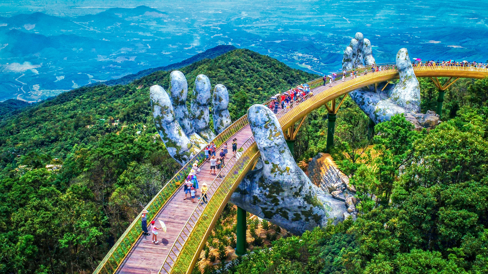
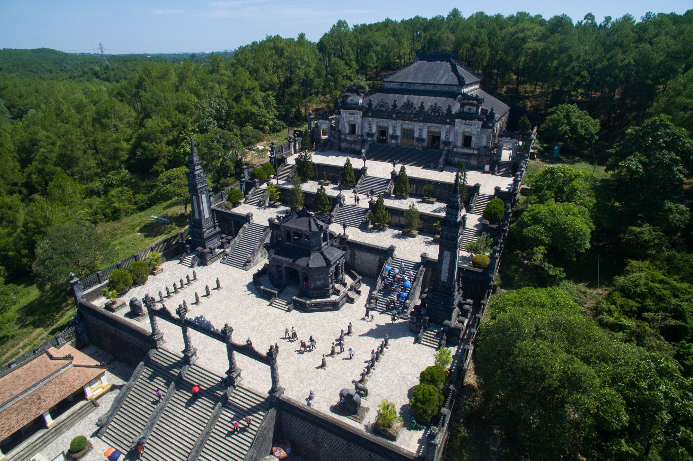
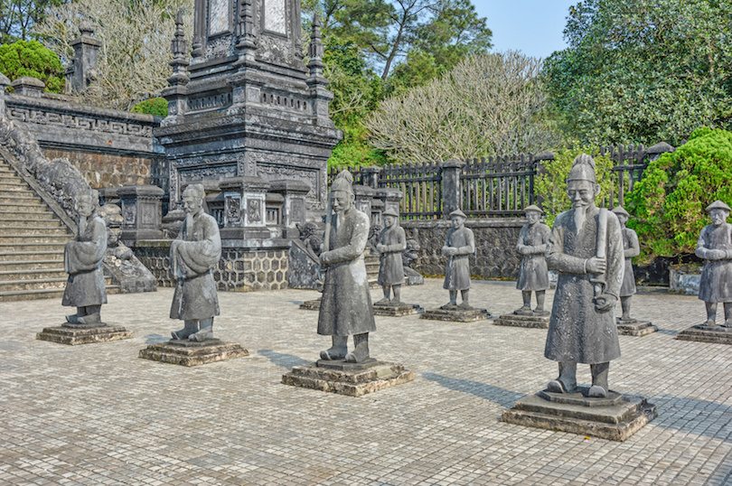
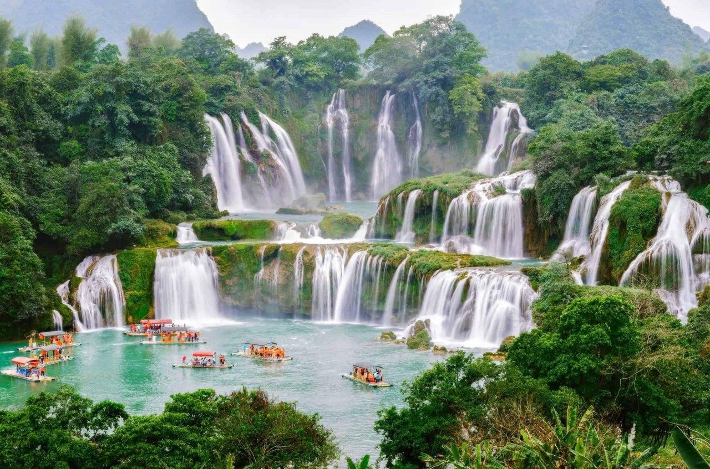
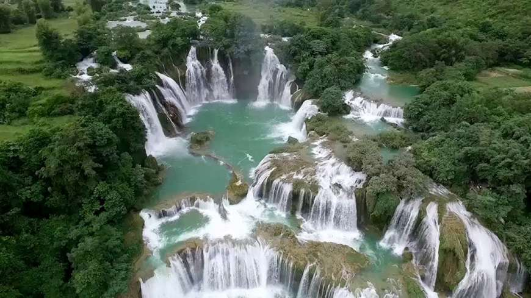
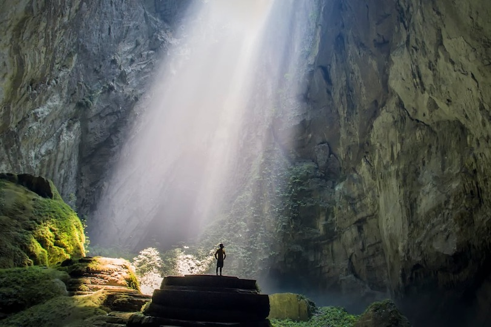

| Homepage | Vietnam Culture | Vietnam Expenses |
The Golden Bridge is a major tourist attraction in Vietnam.
It is also known as the Golden Hand Bridge, and it took about
one year for it to finish building. The bridge is approximately
150-metre or 490 ft long. The yellow-colored bridge is
supported by two massive hands that resemble God's hands.

The Mausoleum of Emperor Khai Dinh is the tomb of the
12th Emperor of the Nguyễn dynasty. It finished building
in 1931 and it took 11 years to construct. This is a very
magnificent location that marked a major point for Vietnam.
It was the final tomb that a Vietnamese Emperor could build
for himself because the 13th Emperor had been abdicated,
which lead to ending the dynasty.
 
The Ban Gioc Water Falls is Vietnam's widest waterfall with 30m height and 300 width.
 
The Hang Son Doong Cave is the largest cave in Vietnam.
It is about three million years old. The cave has water pools
and a river that passes through it. Because of the erosion that
allows in sunshine, greenery can lie on the walls. The cave is
otherworldly, and guided tours are possible to fully
appreciate this incredible site.

Hạ Long Bay is known for its emerald colored waters. There are thousands
of islands across this bay and hundreds of cruises to hop on for the bay tour!
This place is ideal for activities like kayaking, hiking, and scuba diving.
It also has beautiful beaches in addition to the beyond spectacular scenery.